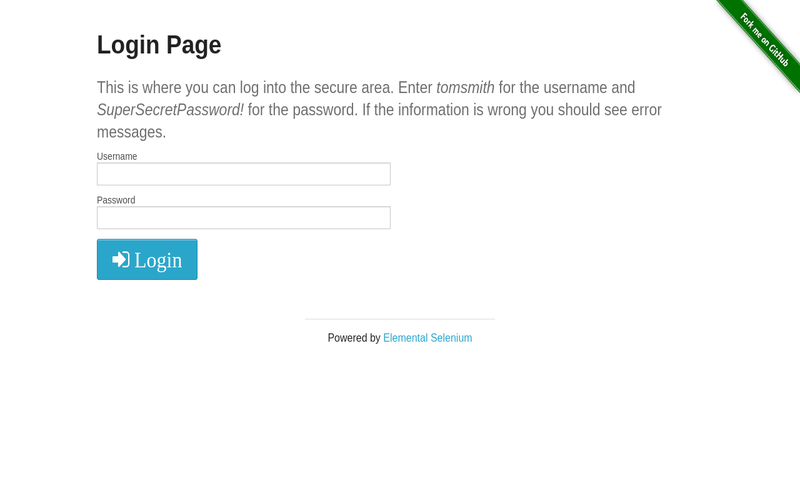
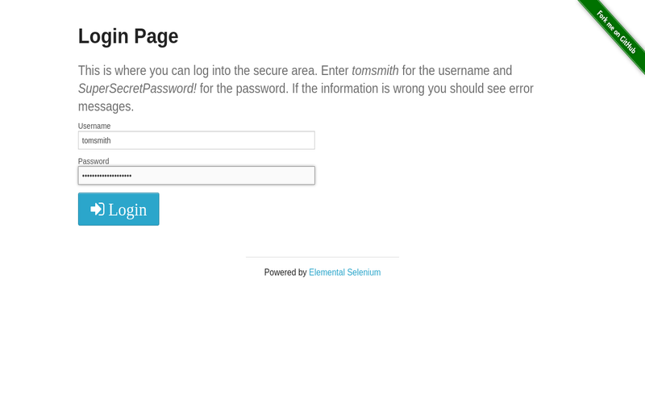
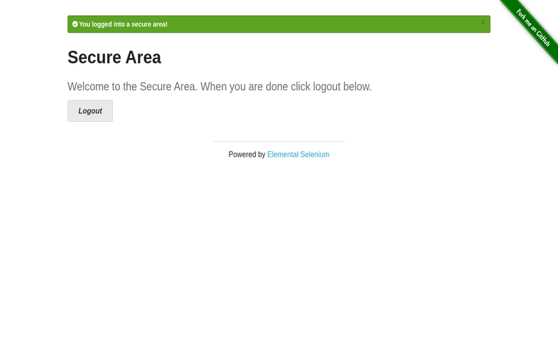

三個步驟，完成專業自動化測試
從想法到執行，前所未有的簡單流程
1
說出您的需求
就像跟同事說話一樣，不需要技術用語
範例對話：
測試 https://the-internet.herokuapp.com/login 的登入功能：
1. 打開登入頁面
2. 輸入用戶名：tomsmith
3. 輸入密碼：SuperSecretPassword!
4. 截圖目前頁面
5. 點擊登入按鈕
6. 驗證是否看到成功訊息
7. 截圖登入後的頁面
8. 點擊登出
9. 驗證返回登入頁面
10. 截圖最終狀態
1. 打開登入頁面
2. 輸入用戶名：tomsmith
3. 輸入密碼：SuperSecretPassword!
4. 截圖目前頁面
5. 點擊登入按鈕
6. 驗證是否看到成功訊息
7. 截圖登入後的頁面
8. 點擊登出
9. 驗證返回登入頁面
10. 截圖最終狀態
您專注在「要測什麼」，AI 處理「怎麼測」
2
10 秒生成專業代碼
從需求分析到代碼生成，全程自動化且可視化
生成的代碼預覽：
import { test, expect } from '@playwright/test';
test('登入功能測試', async ({ page }) => {
await page.goto('https://example.com/login');
await page.fill('#username', 'testuser');
await page.fill('#password', 'password123');
await page.click('#login-btn');
await expect(page.locator('.welcome')).toBeVisible();
await page.screenshot({ path: 'login-success.png' });
});生成的代碼符合業界最佳實踐，您可以直接複製使用
3
看著測試自動完成
不只是執行，還能看到每個步驟的截圖證明
測試執行截圖：

打開登入頁面

輸入憑證

登入成功

返回登入頁面
遇到問題立即發現，不用等測試結束才知道哪裡錯了